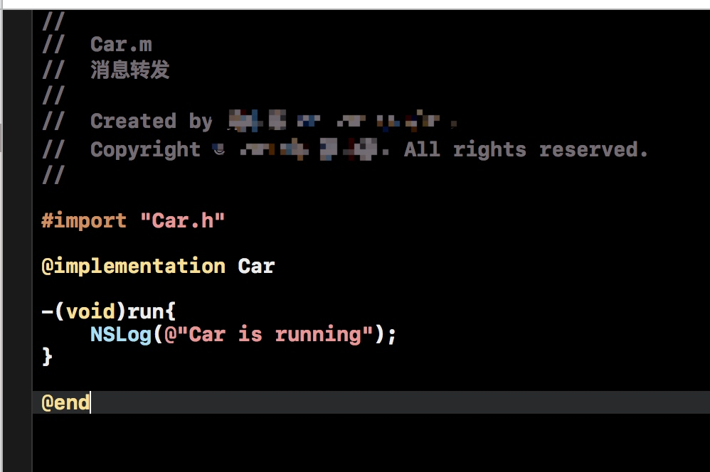

消息转发机制的简单实现
第一种
首先我们来实现这两个方法：
+(BOOL)resolveInstanceMethod: (SEL)sel
+(BOOL)resolveClassMethod:(SEL)sel
这两个方法用于方法的动态解析，当一个对象执行一个方法时，发现没有找到所对应的实现。这是就要靠上面的方法来动态添加实现了
举例来说：
//
// Person.h
// 消息转发
#import <Foundation/Foundation.h>
@interface Person : NSObject
//接口中声明一个方法
-(void)run;
@end
//
// Person.m
// 消息转发
#import "Person.h"
#import <objc/runtime.h>
@implementation Person //在部署的时候我们没有实现接口中声明的run方法
//编写C函数实现代码
void addrun (id self, SEL _cmd){
NSLog(@"%@ %s",self,sel_getName(_cmd));
}
+(BOOL)resolveInstanceMethod:(SEL)sel{
if (sel ==@selector(run)) {
//如果响应run方法，我们动态将上面实现的addrun方法添加到当前类中。
class_addMethod(self, sel, (IMP)addrun, "v@:");
}
return [super resolveInstanceMethod:sel];
}
@end
// main.m
// 消息转发
#import <Foundation/Foundation.h>
#import "Person.h"
int main(int argc, const char * argv[]) {
@autoreleasepool {
//执行代码
Person *man = [Person new];
[man run];
}
return 0;
}
结果为：
说明执行了我们添加的那个方法，而并没有报错。
第二种
我们可以动态的向类中添加方法来解决无选择子的问题，我们也可以选择转换接受者来选择可以处理该选择子的对象。
首先当我们，没有处理第一种方法的时候，运行期系统会给我们第二个机会，询问是否有备用的接受者。我们就要实现orwardingTargetForSelector了
我们举例来看：
首先我们先创建一个新类Car，并且创建一个run方法：

然后在Person.m中，不对resolveInstanceMethod进行任何处理，在forwardingTargetForSelector中返回一个Car实例：

然后继续执行main.m文件，运行为：

说明系统已经将所要实现方法的对象转换为Car的实例对象。
第三种
如果前两种我们都没有实现的话，就会进入第三种，执行完整的消息转发机制。
就会调用两个方法methodSignatureForSelector和forwardInvocation
methodSignatureForSelector方法用来指定方法签名，返回nil表示不处理，否则会进入下一步调用forwardInvocation方法。其中这个签名就是给forwardInvocation中的参数NSInvocation调用的。

开头我们要找的错误unrecognized selector sent to instance原因，原来就是因为methodSignatureForSelector这个方法中，由于没有找到run对应的实现方法，所以返回了一个空的方法签名，最终导致程序报错崩溃。
所以我们需要做的是自己新建方法签名，再在forwardInvocation中用你要转发的那个对象调用这个对应的签名，这样也实现了消息转发。
关于生成签名的类型"v@:"解释一下。每一个方法会默认隐藏两个参数，self、_cmd，self代表方法调用者，_cmd代表这个方法的SEL，签名类型就是用来描述这个方法的返回值、参数的，v代表返回值为void，@表示self，:表示_cmd。
所以第二个和第三个字符必须是“@:” ，第一个字符是返回类型.
具体的可以看一下了解：Type Encodeing
iOS基础概念总结（一）
- 1. OC的前向声明
- 2. #import和#include的区别？
- 3. 用NSLog函数输出一个浮点类型，结果四舍五入，并保留一位小数
- 4.property属性的修饰符有什么样的作用
- 5. self.name=@object和_name=@object有什么不同?
1. OC的前向声明
由于在编译 Person 类的文件时，不需要知道Dog类的全部细节（Dog类中的方法），若使用 #import "Dog.h" 则必须知道Dog.h的全部细节，而Person类中只需要知道类名Dog就可以了,可用通过以下方式告诉编译器@class Dog;这种方式叫向前声明 （forward declaring）,当.m文件中要了解实现细节的时候在引入dog.h
//Person.h
#import <Foundation/Foundation.h>
@class Dog; //前向声明
@interface Person : NSObject
@property (nonatomic, strong) NSString *name;
@property (nonatomic, strong) Dog *dog;
- 向前声明解决了两个类互相引用的问题。
- 向前声明可用降低编译时间，除非必要，则可以使用向前申明，并在实现文件中映入头文件，这样做可用尽量降低类之间的耦合。
2. #import和#include的区别？
#import是Objective-C导入头文件的语法，可保证不会重复导入。
#include是C/C++导入头文件的语法，如果是objective-c与C/C++混编码，对于C/C++类型的文件，还是使用#include来引入，这种写法需要添加防重复导入的语法。
3. 用NSLog函数输出一个浮点类型，结果四舍五入，并保留一位小数
float money = 1.011;
NSLog(@"%.1f", money);
4.property属性的修饰符有什么样的作用
property是属性访问声明，扩号内支持以下几个属性：
- getter=getName、setter=setName：设置setter与getter的方法名
readwrite、readonly：设置可供访问级别
assign：方法直接赋值，不进行任何retain操作，为了解决原类型与环循引用问题
retain：其setter方法对参数进行release旧值再retain新值，所有实现都是这个顺序
strong：此特质表明该属性定义了一种“拥有关系”（owning relationship)。为这种属性设置新值时，设置方法会先保留新值，并释放旧值，然后再将新值设置上去。
weak 此特质表明该属性定义了一种“非拥有关系”（nonowning relationship)。为这种属性设置新值时，设置方法既不保留新值，也不释放旧值。此特质同assign类似,然而在属性所指的对象遭到摧毁时，属性值也会清空（nil out)。
unsafe_unretained 此特质的语义和assign相同，但是它适用于“对象类型”（object type),该特质表达一种“非拥有关系”（“不保留”，unretained),当目标对象遭到摧毁时，属性值不会自动清空（“不安全”，unsafe),这一点与weak有区别。
copy：其setter方法进行copy操作，与retain处理流程一样，先对旧值release，再copy出新的对象，retainCount为1。这是为了减少对上下文的依赖而引入的机制。
nonatomic：非原子性访问，不加同步， 多线程并发访问会提高性能。注意，如果不加此属性，则默认是两个访问方法都为原子型事务访问。
5. self.name=@object和_name=@object有什么不同?
self.name =”object”：会调用对象的setName()方法；name = “object”：会直接把"object"字符串赋值给当前对象的name属性。后者的效率会很高，因为没有调用set方法而是直接方法问内存。


Copyright © 2017 Powered by LZH, Theme used GitHub CSS.